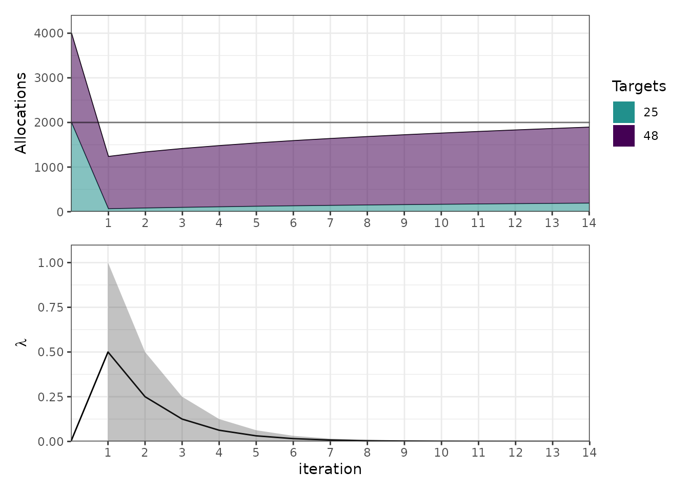
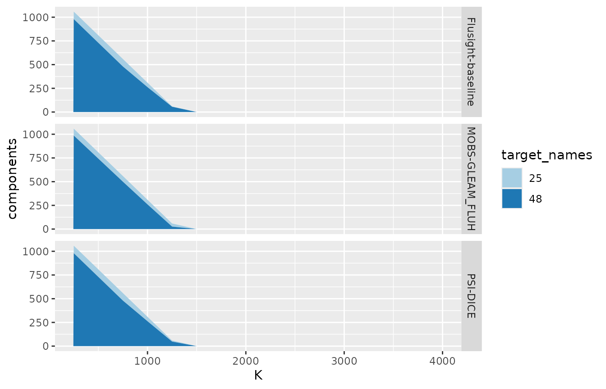

Scoring hubverse forecasts by what they would allocate
Source:vignettes/alloscore2.Rmd
alloscore2.RmdAcknowledgment
This vignette adapts content from the original
alloscore package written by Aaron Gerding. It was
drafted by Claude Code (Opus 5) and reviewed for accuracy by Nick
Reich.
The idea
Most forecast scores judge each prediction on its own. An allocation score instead asks what a whole vector of forecasts would have led you to do with a scarce resource, and then charges you for the consequences.
Concretely: you have forecasts for targets and a budget . You allocate to target , paying per unit, so that . When the outcomes arrive, you incur a generalized piecewise linear loss
which with near 1 punishes falling short much harder than overshooting. Note also that scales that loss — the cost per unit of error at target — so the pair splits into an over-cost and an under-cost . Both and default to 1 in this package’s computations.
The score is the loss your allocation incurred, minus the loss of an allocation made by an oracle who knew the outcomes:
Because the budget is shared, this rewards getting the relative burden across targets right.
Looking at some forecast data
The forecast data in hubExamples is a standard hubverse
model_out_tbl. We filter to the quantile output type, which
is the one alloscore2 supports.
model_out <- hubExamples::forecast_outputs |>
filter(output_type == "quantile")
oracle_output <- hubExamples::forecast_oracle_output
model_out |>
select(model_id, reference_date, horizon, location, output_type_id, value) |>
head()
#> # A tibble: 6 × 6
#> model_id reference_date horizon location output_type_id value
#> <chr> <date> <int> <chr> <chr> <dbl>
#> 1 Flusight-baseline 2022-11-19 0 25 0.05 22
#> 2 Flusight-baseline 2022-11-19 0 25 0.1 31
#> 3 Flusight-baseline 2022-11-19 0 25 0.25 45
#> 4 Flusight-baseline 2022-11-19 0 25 0.5 51
#> 5 Flusight-baseline 2022-11-19 0 25 0.75 57
#> 6 Flusight-baseline 2022-11-19 0 25 0.9 71What’s in the example data
hubExamples::forecast_outputs is a small slice of a
FluSight-style hub: three models forecasting weekly incident influenza
hospitalizations in two states, FIPS 25 (Massachusetts) and 48 (Texas),
from two reference dates in the 2022–23 season, at horizons 0 to 3 weeks
ahead. Each forecast has seven predictive quantiles.
model_out |>
select(model_id, target, location, reference_date, horizon, output_type_id) |>
tidyr::pivot_longer(
everything(),
names_to = "column",
values_transform = as.character
) |>
summarise(
n = n_distinct(value),
values = paste(sort(unique(value)), collapse = ", "),
.by = column
)
#> # A tibble: 6 × 3
#> column n values
#> <chr> <int> <chr>
#> 1 model_id 3 Flusight-baseline, MOBS-GLEAM_FLUH, PSI-DICE
#> 2 target 1 wk inc flu hosp
#> 3 location 2 25, 48
#> 4 reference_date 2 2022-11-19, 2022-12-17
#> 5 horizon 4 0, 1, 2, 3
#> 6 output_type_id 7 0.05, 0.1, 0.25, 0.5, 0.75, 0.9, 0.95That is rows. Each (model, reference date, horizon) combination therefore covers exactly two locations, and those two are the set that will share a budget below.
The observed outcomes come from
hubExamples::forecast_oracle_output, the full FluSight
target series for every location and week;
as_alloscore_df() joins in only the rows it needs, matching
on target, target_end_date and
location. For the weeks these forecasts cover:
oracle_output |>
filter(
output_type == "quantile",
location %in% unique(model_out$location),
target_end_date %in% unique(model_out$target_end_date)
) |>
select(location, target_end_date, oracle_value) |>
tidyr::pivot_wider(
names_from = location, values_from = oracle_value, names_prefix = "loc_"
)
#> # A tibble: 8 × 3
#> target_end_date loc_25 loc_48
#> <date> <dbl> <dbl>
#> 1 2022-11-19 79 1230
#> 2 2022-11-26 221 1929
#> 3 2022-12-03 446 2139
#> 4 2022-12-10 578 1781
#> 5 2022-12-17 694 1462
#> 6 2022-12-24 769 1225
#> 7 2022-12-31 733 1434
#> 8 2023-01-07 466 1170Texas runs roughly three to fifteen times Massachusetts week to week, and the two together range from about 1,300 to 2,600 hospitalizations. That is the scale to keep in mind when reading budgets: is severely binding, while covers any week outright.
Choosing what shares a budget
This is the one modeling decision the package cannot make for you. An
allocation problem is a set of targets competing for one
budget, so you have to say which task ID columns enumerate that set.
Here we pool across locations, so
target_cols = "location".
Everything else — model_id plus the remaining task IDs —
becomes the allocation unit, and one allocation problem is
solved per combination. This follows the same logic as a hubverse
compound_taskid_set: the columns you name vary within a
group, and the rest are held constant. In the example below, we are
preparing to make allocations based on the forecasts from the model in
model_id, made for all the locations at a specific
reference_date, target, horizon
and target_end_date.
adf <- as_alloscore_df(model_out, oracle_output, target_cols = "location")
adf
#> # A tibble: 24 × 6
#> model_id reference_date target horizon target_end_date forecasts
#> * <chr> <date> <chr> <int> <date> <list>
#> 1 Flusight-baseline 2022-11-19 wk inc fl… 0 2022-11-19 <tibble>
#> 2 Flusight-baseline 2022-11-19 wk inc fl… 1 2022-11-26 <tibble>
#> 3 Flusight-baseline 2022-11-19 wk inc fl… 2 2022-12-03 <tibble>
#> 4 Flusight-baseline 2022-11-19 wk inc fl… 3 2022-12-10 <tibble>
#> 5 Flusight-baseline 2022-12-17 wk inc fl… 0 2022-12-17 <tibble>
#> 6 Flusight-baseline 2022-12-17 wk inc fl… 1 2022-12-24 <tibble>
#> 7 Flusight-baseline 2022-12-17 wk inc fl… 2 2022-12-31 <tibble>
#> 8 Flusight-baseline 2022-12-17 wk inc fl… 3 2023-01-07 <tibble>
#> 9 MOBS-GLEAM_FLUH 2022-11-19 wk inc fl… 0 2022-11-19 <tibble>
#> 10 MOBS-GLEAM_FLUH 2022-11-19 wk inc fl… 1 2022-11-26 <tibble>
#> # ℹ 14 more rowsEach row in the table above holds one allocation problem. The
forecasts column has a row per target, with the predictive
quantiles (ps, qs), a cdf F and
quantile function Q interpolated through them by distfromq, and the observed
outcome y:
adf$forecasts[[1]] |> select(location, y, ps, qs)
#> # A tibble: 2 × 4
#> location y ps qs
#> <chr> <dbl> <list> <list>
#> 1 25 79 <dbl [7]> <dbl [7]>
#> 2 48 1230 <dbl [7]> <dbl [7]>
adf$forecasts[[1]]$F[[1]](100)
#> [1] 0.9929005Above, adf$forecasts[[1]]$F[[1]] is the cumulative
distribution function of the first target’s predictive distribution, fit
by distfromq through that row’s ps/qs pairs — you call it
at a value on the outcome scale and it returns the forecast probability
that the outcome falls at or below that value. So the printed value
above is F[[1]] evaluated at the value of 100, and can be
read as “what probability did this model put on location 25 seeing 100
or fewer?”. And Q[[1]] is its inverse, taking a probability in
back to the outcome scale.
Note that you rarely need to call as_alloscore_df()
yourself — it is what alloscore_model_out() does internally
— but it is the place to look when a join or a target set is not what
you expected.
Allocating without scoring
If you have a forecast and a budget but don’t have the eventual
observations to score against yet, you can use
allocate_model_out(), which stops after the allocation
step. This is useful when the question is what a forecast implies you
should do rather than how good it was:
allocate_model_out(
model_out_tbl = filter(model_out, reference_date == "2022-11-19", horizon == 0),
K = 1000,
target_cols = "location"
) |>
select(model_id, K, xdf) |>
mutate(allocations = purrr::map(xdf, ~ select(.x, target_names, x))) |>
select(-xdf) |>
tidyr::unnest(allocations)
#> # A tibble: 6 × 4
#> model_id K target_names x
#> <chr> <dbl> <chr> <dbl>
#> 1 Flusight-baseline 1000 25 32.3
#> 2 Flusight-baseline 1000 48 968.
#> 3 MOBS-GLEAM_FLUH 1000 25 30.2
#> 4 MOBS-GLEAM_FLUH 1000 48 970.
#> 5 PSI-DICE 1000 25 32.5
#> 6 PSI-DICE 1000 48 967.In the above output, x is the column giving you the
suggested allocations from each model for each location.
Allocation scores
However, the focus of this package is on scoring different choices of allocations based on a model’s forecast. Here is code to do that, for a variety of different budgets .
scores <- alloscore_model_out(
model_out_tbl = model_out,
oracle_output = oracle_output,
K = c(500, 1000, 2000, 4000),
target_cols = "location",
by = c("model_id", "K")
)
scores
#> # A tibble: 12 × 6
#> model_id K score score_raw score_oracle ytot
#> <chr> <dbl> <dbl> <dbl> <dbl> <dbl>
#> 1 Flusight-baseline 500 -0.00553 1544. 1544. 2044.
#> 2 Flusight-baseline 1000 0.342 1045. 1044. 2044.
#> 3 Flusight-baseline 2000 50.7 228. 177. 2044.
#> 4 Flusight-baseline 4000 0 0 0 2044.
#> 5 MOBS-GLEAM_FLUH 500 -0.427 1544. 1544. 2044.
#> 6 MOBS-GLEAM_FLUH 1000 -0.464 1044. 1044. 2044.
#> 7 MOBS-GLEAM_FLUH 2000 29.4 207. 177. 2044.
#> 8 MOBS-GLEAM_FLUH 4000 0 0 0 2044.
#> 9 PSI-DICE 500 -0.173 1544. 1544. 2044.
#> 10 PSI-DICE 1000 -0.263 1044. 1044. 2044.
#> 11 PSI-DICE 2000 53.1 230. 177. 2044.
#> 12 PSI-DICE 4000 0 0 0 2044.Smaller scores are better. Note the ytot column: the
total outcome across the pooled locations. Once
exceeds it the oracle can cover everything and its loss falls to zero,
so differences between models become differences in how well they spent
a budget that was never really binding.
Note that scores are differences of losses against an oracle, so they
in theory should never be below zero. However, small negative values can
occur in practice (see results above) as an artifact of the
eps_K argument to allocate() or
alloscore_model_out(), which lets the forecaster’s
allocation overspend the budget by up to 1% while the oracle is held to
exactly, and it shrinks toward zero as you tighten that tolerance.
Digging into per-target details
With summarize = FALSE you get one row per allocation
problem and budget, plus a nested xdf holding the
allocation, outcome and loss for each target.
detail <- alloscore_model_out(
model_out_tbl = model_out,
oracle_output = oracle_output,
K = 2000,
target_cols = "location",
summarize = FALSE
)
detail |> select(model_id, reference_date, horizon, K, score, xdf)
#> # A tibble: 24 × 6
#> model_id reference_date horizon K score xdf
#> <chr> <date> <int> <dbl> <dbl> <list>
#> 1 Flusight-baseline 2022-11-19 0 2000 0 <tibble [2 × 8]>
#> 2 Flusight-baseline 2022-11-19 1 2000 1.35e+ 1 <tibble [2 × 8]>
#> 3 Flusight-baseline 2022-11-19 2 2000 1.14e-13 <tibble [2 × 8]>
#> 4 Flusight-baseline 2022-11-19 3 2000 6.82e-13 <tibble [2 × 8]>
#> 5 Flusight-baseline 2022-12-17 0 2000 3.46e+ 1 <tibble [2 × 8]>
#> 6 Flusight-baseline 2022-12-17 1 2000 2.86e+ 2 <tibble [2 × 8]>
#> 7 Flusight-baseline 2022-12-17 2 2000 7.16e+ 1 <tibble [2 × 8]>
#> 8 Flusight-baseline 2022-12-17 3 2000 0 <tibble [2 × 8]>
#> 9 MOBS-GLEAM_FLUH 2022-11-19 0 2000 0 <tibble [2 × 8]>
#> 10 MOBS-GLEAM_FLUH 2022-11-19 1 2000 -2.07e-12 <tibble [2 × 8]>
#> # ℹ 14 more rows
detail$xdf[[2]]
#> # A tibble: 2 × 8
#> target_names x score_fun y oracle components_raw components_oracle
#> <chr> <dbl> <list> <dbl> <dbl> <dbl> <dbl>
#> 1 25 234. <fn> 221 206. 0 15.4
#> 2 48 1766. <fn> 1929 1794. 163. 135.
#> # ℹ 1 more variable: components <dbl>The components column is each target’s contribution to
the overall allocation score. In the above case, the model’s total
shortfall was 163 against the oracle’s 150, and the 13-unit gap (the
score in row 2 of the detail tibble) is precisely what it
overspent on location 25 (234 against a need of 221). With alpha = 1, a
binding budget makes the score simply the budget wasted on targets that
didn’t need it — overshooting 25 is not penalized directly (its
components_raw is 0), but it is penalized because those
units were unavailable to location 48.
Costs that differ by target
w is the cost of a unit allocated to a target. It can be
a scalar, a vector named by target, or the name of a column of the model
output. Making one location more expensive shifts the allocation away
from it:
one_round <- model_out |>
filter(reference_date == "2022-11-19", horizon == 0)
bind_rows(
allocate_model_out(one_round, K = 1000, target_cols = "location") |>
mutate(weighting = "equal cost"),
allocate_model_out(
one_round,
K = 1000, target_cols = "location", w = c("25" = 1, "48" = 5)
) |>
mutate(weighting = "location 48 five times dearer")
) |>
select(weighting, model_id, xdf) |>
mutate(alloc = purrr::map(xdf, ~ select(.x, target_names, x))) |>
select(-xdf) |>
tidyr::unnest(alloc) |>
tidyr::pivot_wider(names_from = target_names, values_from = x)
#> # A tibble: 6 × 4
#> weighting model_id `25` `48`
#> <chr> <chr> <dbl> <dbl>
#> 1 equal cost Flusight-baseline 32.3 968.
#> 2 equal cost MOBS-GLEAM_FLUH 30.2 970.
#> 3 equal cost PSI-DICE 32.5 967.
#> 4 location 48 five times dearer Flusight-baseline 59.3 188.
#> 5 location 48 five times dearer MOBS-GLEAM_FLUH 52.1 190.
#> 6 location 48 five times dearer PSI-DICE 87.8 182.Every row spends the full budget of 1000, but the arithmetic differs:
in the first three rows a unit costs 1 everywhere, so the two
allocations sum to 1000, while in the last three each unit at location
48 costs 5, so 25 + 5 × 48 is 1000 and only
about 250 units of resource are deployed in total.
How much it hurts to fall short
alpha is the quantile level of the underlying pinball
loss, and it encodes how asymmetric the consequences are. The
unconstrained optimum for a target is its alpha-quantile,
so raising alpha buys more insurance against
shortfalls.
purrr::map(
c(0.5, 0.8, 0.95, 1),
function(a) {
alloscore_model_out(
one_round,
oracle_output,
K = 2000,
target_cols = "location",
alpha = a,
by = "model_id"
) |>
mutate(alpha = a)
}
) |>
purrr::list_rbind() |>
select(alpha, model_id, score) |>
tidyr::pivot_wider(names_from = model_id, values_from = score)
#> # A tibble: 4 × 4
#> alpha `Flusight-baseline` `MOBS-GLEAM_FLUH` `PSI-DICE`
#> <dbl> <dbl> <dbl> <dbl>
#> 1 0.5 103 47 35.5
#> 2 0.8 134. 25.9 11.4
#> 3 0.95 29.5 19.7 9.65
#> 4 1 0 0 0The above results show that PSI-DICE allocates best at every asymmetry level, Flusight-baseline worst — by a widening margin as alpha rises, since its tight, low predictive distributions leave shortfalls that grow costlier — while at alpha = 1 all three score zero because the unbounded optimum makes each spend the full budget, which at covers this week’s total of 1309 outright.
Looking inside the optimization
The allocation is found by bisecting on a single Lagrange multiplier
,
the shadow price of the budget. At the optimum every target that
receives anything has the same marginal expected benefit, and each
allocation is that target’s predictive quantile at a level discounted by
.
plot_iterations() shows that search.
alloc <- allocate_model_out(one_round, K = 2000, target_cols = "location")
plot_iterations(dplyr::filter(alloc, model_id == "PSI-DICE"), K_to_plot = 2000)
#> Warning: Removed 1 row containing missing values or values outside the scale range
#> (`geom_ribbon()`).
The upper panel stacks the allocations, with the horizontal line at the budget; the lower panel tracks and the interval bracketing it.
Loosely, is what one more unit of budget would be worth — how much expected loss it would save — so it is large when the budget is tight and falls to zero once the budget stops binding. With equal costs and weights it also has a direct reading: instead of covering each target up to its -quantile, you can only afford its -quantile, and is the same for every target that gets anything. At and , each location is stocked to its 85th percentile rather than its 95th.
Score decomposition
plot_components_slim() shows which targets a score came
from. Over a grid of budgets it stacks each target’s contribution.
scored <- alloscore_model_out(
model_out_tbl = one_round,
oracle_output = oracle_output,
K = seq(250, 4000, by = 250),
target_cols = "location",
summarize = FALSE
)
plot_components_slim(
scored,
model_col_name = "model_id",
show_oracle = FALSE
)
Scoring outside the hubverse
The core functions take forecasts as a data frame with one row per
target and list columns of cdfs and quantile functions, which
add_pdqr_funs() builds from parameter columns for any
distribution R knows.
forecasts <- add_pdqr_funs(
tibble::tibble(
target_names = c("a", "b", "c"),
dist = "norm",
mean = c(5, 8, 12),
sd = c(1, 2, 3)
),
types = c("p", "q")
)
alloscore(forecasts, y = c(4, 9, 11), K = c(10, 20, 30)) |>
select(K, score, score_raw, score_oracle, ytot)
#> # A tibble: 3 × 5
#> K score score_raw score_oracle ytot
#> <dbl> <dbl> <dbl> <dbl> <dbl>
#> 1 10 0.0154 14.0 14 24
#> 2 20 0.167 4.17 4 24
#> 3 30 0 0 0 24For Monte Carlo work — one allocation scored against many simulated
outcome vectors — slim() strips the allocation down to what
scoring needs, and alloscore() then accepts a list of
outcome vectors.
alloc <- slim(allocate(forecasts, K = c(10, 20, 30)))
ys <- withr::with_seed(42, {
purrr::map(1:50, function(i) {
rlang::set_names(rexp(3, rate = 1 / 8), c("a", "b", "c"))
})
})
mc <- alloscore(alloc, ys)
mc |>
select(samp, scores) |>
tidyr::unnest(scores) |>
group_by(K) |>
summarise(mean_score = mean(score), sd_score = sd(score), .groups = "drop")
#> # A tibble: 3 × 3
#> K mean_score sd_score
#> <dbl> <dbl> <dbl>
#> 1 10 1.14 1.50
#> 2 20 2.50 3.24
#> 3 30 3.40 4.94Caveats
- Only the
quantileoutput type is supported. Scoringsampleoutput, which would let the allocation respect dependence across targets rather than working from marginals, is not implemented. - The budget constraint is enforced only to within
eps_K, 1% by default. An allocation may therefore overspend slightly, and since the oracle is held to the budget exactly, a score can come out marginally negative. Tighteneps_Kif that matters for your application. -
oracle_allocate()spends the whole budget even when the oracle has no use for it, so the oracle allocation it reports is inflated for generous budgets. The oracle’s loss, and hence the score, is unaffected.